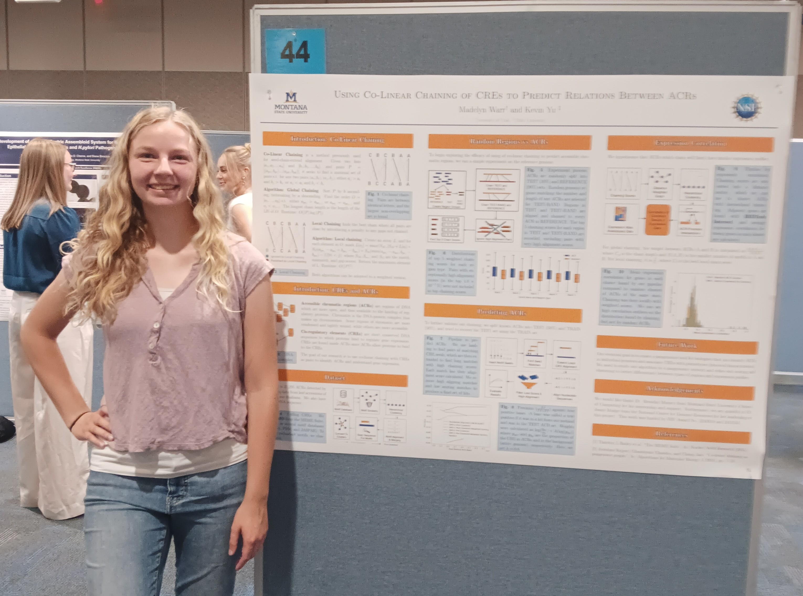
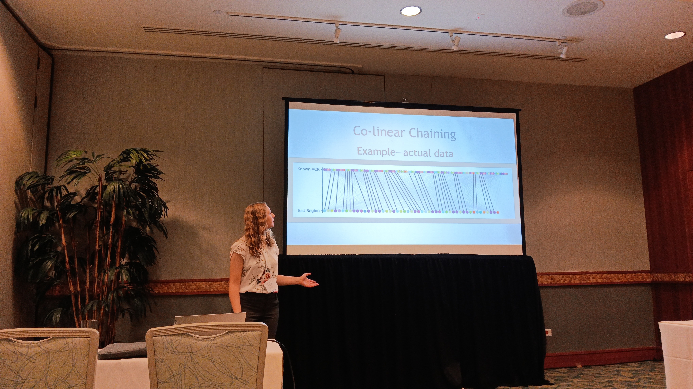
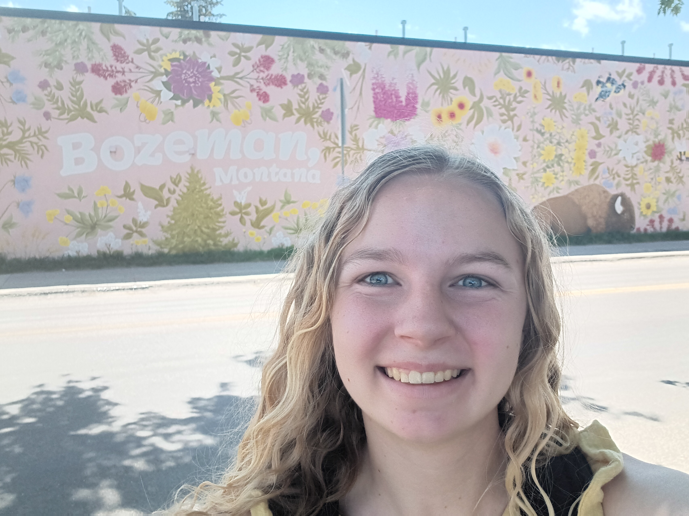
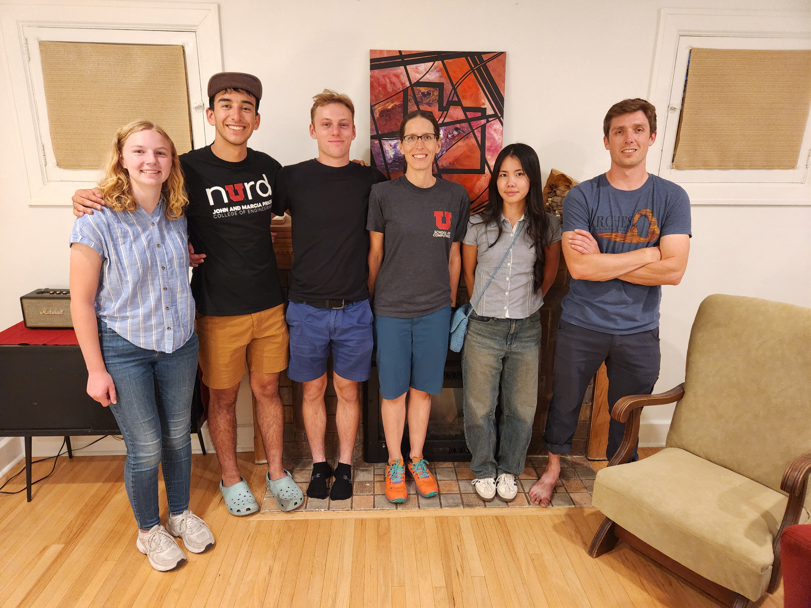

We presented the poster "Using Co-Linear Chaining of CREs to Predict Relations Between ACRs" at an undergraduate poster session at Montana State University in August 2025.

I presented our work on using co-linear chaining to predict accessible chromatin regions at the International Conference of Bioinformatics and Computational Biology 2026 in Honolulu, Hawaii.

I participated in a Research Experience for Undergraduates (REU) in the summer of 2026 in Bozeman, Montana.

I'm a part of the Theory in Practice group at the University of Utah, led by Dr. Blair Sullivan. We primarily study parameterized algorithms, graph modification, and scalable network analysis.